| 中国建筑 项目管理表格 | |||||||||||||||||||||||||||||||||||||||||||||||||||||||||||||||||||||||||||||||||||||||||||||||||||||||||||||||||||||||||||||||||||||||||||||||||||||||||||||||||||||||||||||||||||||||||||||||||||||||||||||||||||||||||||||||||||||||||||||||||||||||||||||||||||||||||||||||||||||||||||||||||||||||||||||||||||||||||||||||||||||||||||||||||||||||||||||||||||||||||||||||||||||||||||||||||||||||||||||||||||||||||||||||||||||||||||||||||||||
分项工程技术交底卡 | 表格编号 | |||||||||||||||||||||||||||||||||||||||||||||||||||||||||||||||||||||||||||||||||||||||||||||||||||||||||||||||||||||||||||||||||||||||||||||||||||||||||||||||||||||||||||||||||||||||||||||||||||||||||||||||||||||||||||||||||||||||||||||||||||||||||||||||||||||||||||||||||||||||||||||||||||||||||||||||||||||||||||||||||||||||||||||||||||||||||||||||||||||||||||||||||||||||||||||||||||||||||||||||||||||||||||||||||||||||||||||||||||||
CSCES-PM- | ||||||||||||||||||||||||||||||||||||||||||||||||||||||||||||||||||||||||||||||||||||||||||||||||||||||||||||||||||||||||||||||||||||||||||||||||||||||||||||||||||||||||||||||||||||||||||||||||||||||||||||||||||||||||||||||||||||||||||||||||||||||||||||||||||||||||||||||||||||||||||||||||||||||||||||||||||||||||||||||||||||||||||||||||||||||||||||||||||||||||||||||||||||||||||||||||||||||||||||||||||||||||||||||||||||||||||||||||||||||
项目名称及编码 | 平顶山高新区湛南棚户区村庄改造项目B区 | 共 15 页 第 1 页 | ||||||||||||||||||||||||||||||||||||||||||||||||||||||||||||||||||||||||||||||||||||||||||||||||||||||||||||||||||||||||||||||||||||||||||||||||||||||||||||||||||||||||||||||||||||||||||||||||||||||||||||||||||||||||||||||||||||||||||||||||||||||||||||||||||||||||||||||||||||||||||||||||||||||||||||||||||||||||||||||||||||||||||||||||||||||||||||||||||||||||||||||||||||||||||||||||||||||||||||||||||||||||||||||||||||||||||||||||||||
楼栋号 |
| 分项工程名称 | 砌体工程 | |||||||||||||||||||||||||||||||||||||||||||||||||||||||||||||||||||||||||||||||||||||||||||||||||||||||||||||||||||||||||||||||||||||||||||||||||||||||||||||||||||||||||||||||||||||||||||||||||||||||||||||||||||||||||||||||||||||||||||||||||||||||||||||||||||||||||||||||||||||||||||||||||||||||||||||||||||||||||||||||||||||||||||||||||||||||||||||||||||||||||||||||||||||||||||||||||||||||||||||||||||||||||||||||||||||||||||||||||||
分包公司 |
| 负责人 |
| |||||||||||||||||||||||||||||||||||||||||||||||||||||||||||||||||||||||||||||||||||||||||||||||||||||||||||||||||||||||||||||||||||||||||||||||||||||||||||||||||||||||||||||||||||||||||||||||||||||||||||||||||||||||||||||||||||||||||||||||||||||||||||||||||||||||||||||||||||||||||||||||||||||||||||||||||||||||||||||||||||||||||||||||||||||||||||||||||||||||||||||||||||||||||||||||||||||||||||||||||||||||||||||||||||||||||||||||||||
1、砌体设计情况1、墙体材料：±0.000以下与土直接接触的维护墙基础、隔墙等采用M20烧结页岩砖（自重19KN/m³）、M10水泥砂浆砌筑。其它室内填充墙均采用加气混凝土砌块，强度等级A3.5，体积密度级别B05；用Ma5.0砂浆砌筑；卫生间四周墙体用M5水泥砂浆。 2、过梁、窗台压顶、圈梁、构造柱混凝土强度等级：C25。 3、其他要求： 1）与砌体填充墙连接的柱，应配合施工图在墙体位置，沿柱高每隔600mm预埋2C6拉筋，300mm墙体设置3C6拉筋，锚入柱内≥250mm，沿墙全长贯通。 2）所有填充墙纵横交接及转角处应错缝搭接，无构造柱处应用钢筋拉结，沿墙高每600mm设2C6，沿墙体通长设置。 3）墙长大于5m时，填充墙与梁底或板底拉结。做法详见11YG002第70页节点2。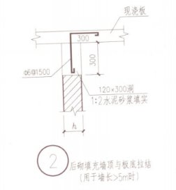 4）门窗洞口过梁均采用混凝土过梁，过梁在墙体上的支撑长度不小于250，当支撑长度不足时，应按过梁与柱、墙直接连接，进行植筋，钢筋选用三级钢。过梁按建筑洞口尺寸选用11YG301图集，荷载级别按二级。 过梁尺寸及钢筋选用如下：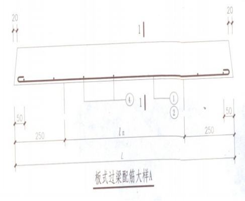
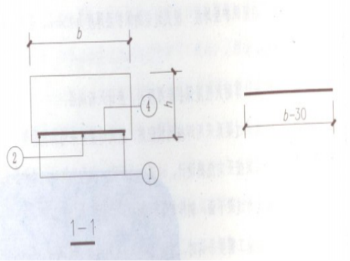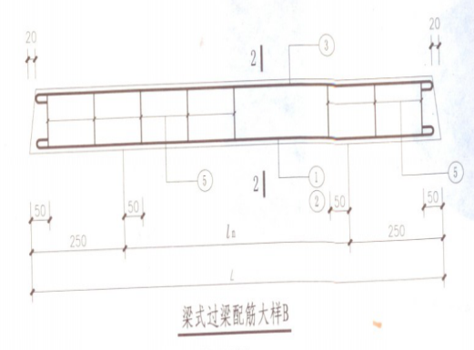
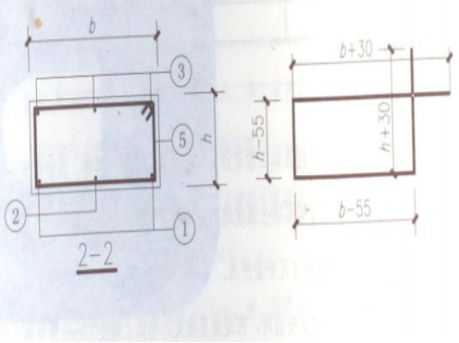
100mm加气块墙体过梁尺寸及配筋表
200mm加气块墙体过梁尺寸及配筋表
5）构造柱设置条件、构件尺寸 1、填充墙端部无主体结构或垂直墙体与之拉结时，端部设置；2、填充墙长度超过8m或层高2倍在中部设置，且构造柱间距不大于4m；3、≥2000mm的门窗洞口和入户门两侧设置构造柱。 构造柱尺寸为墙宽*墙宽，配筋4根直径12的三级钢，箍筋为直径6的三级钢间距100/250布置。构造柱钢筋搭接长度为50d，箍筋加密区长度50d。 钢筋绑扎时，应留好墙体拉结筋，然后先砌墙、后浇筑混凝土，砌墙时墙与构造柱连接处要砌成马牙槎，马牙槎从楼板处先退后进，留槎宽度60mm。浇筑构造柱混凝土前，应将柱根处杂物清理干净。 构造柱已在混凝土施工过程中预埋插筋，若个别与设计院核发的构造柱平面不符情况采用植筋方式施工。 6）窗台压顶设置 填充墙在外墙每层窗台标高处应设置现浇混凝土窗台压顶梁（砼标号C25），压顶梁高100mm，纵向配筋2Φ8，分布筋Φ6@200。两侧有混凝土构件的钢筋锚入混凝土中。（如下图） 1、两侧无构造柱时，伸入砌体墙100mm。 2、两侧有构造柱时，与构造柱相连。 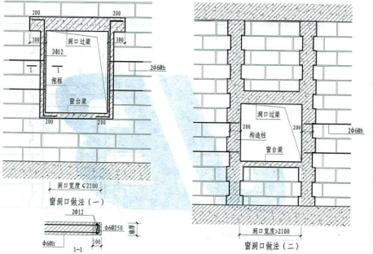 7）混凝土挡水台 下列部位须做C20细石混凝土挡水台，高度高于同层厅房建筑完成面250mm，宽度同该部位墙体厚度：1、卫生间周边（除门洞外）墙体下部；2、阳台、外墙外平台与外墙交接处（除门洞外）；3、室外空调板与外墙交接处，不在楼层处的空调板高出空调板250mm；4、雨蓬与外墙交接处，高出雨蓬250mm。 设备管井每层墙体底部均设同墙宽C20细石混凝土挡水台（含门下），高出建筑楼层标高以上300mm。风井内壁抹灰15mm厚，随砌随抹光。 8）门窗洞口 窗洞口上设过梁、下设压顶。窗口加气块墙两侧设200宽、同砌块高厚度同墙的C20混凝土块，上中下设置，间距600（具体根据窗洞口高度调整）。独立窗间墙中部和洞口宽度大于等于2000mm的两侧加设构造柱。 9）圈梁设置 当墙高大于4m时，在门窗顶或墙高中部设与柱连接且沿墙全长贯通的圈梁一道，配筋为纵筋4C12，箍筋A6@250，截面尺寸为墙厚*120mm。详见下图： 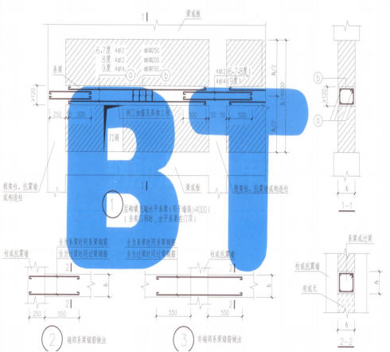 4主楼电箱洞口与消防电箱洞口预制块4.1水电电箱采用预制混凝土块安装，混凝土采用C20细石，壁厚50mm。成品内径见下表： B区主楼水电安装工程二次砌体预留洞口统计表
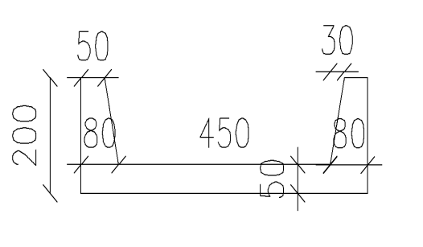 预制块示意图 4.2消火栓洞口上方加过梁，过梁截面尺寸为200*100，配筋为纵,2A6，拉钩9A6。洞口背后用蒸压灰砂砖砌筑100mm厚墙体。消防班组现场跟踪指导并监督施工情况。洞口尺寸和平面图立面图如下：
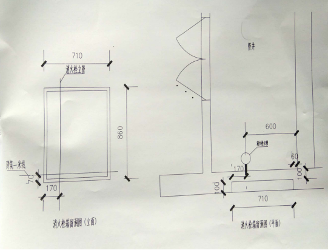 二、施工流程及施工工艺2.1施工流程基层清理→墙体放线→设置拉墙筋→制备砂浆→砌块排列→底砌→铺砂浆→砌块就位→校正→砂浆镶砖→竖缝灌砂浆→勾缝→墙顶斜砌。 2.2施工方法1、基层处理 在砌筑的前一天，将墙体部位楼板上的砂浆和杂物等清除干净，并洒水润湿。加气混凝土砌块砌筑时含水率控制在小于15％，且砌筑时边砌边向砌筑面用滚筒适当滚水润湿，禁止提前洒水湿润。 2、定位放线 在结构混凝土墙、柱上弹好建筑＋1000mm的标高线，依据建筑图纸，在楼地面上弹好墙身线、门洞口线；立皮数杆，在柱上弹好过梁或圈梁位置线、墙拉筋位置线；对外墙窗洞，应从楼顶向下吊线，同层窗拉水平通线，并将洞口边线标志在梁柱上，以保证窗的外边线横平竖直；定位放线完成后，由工长验收合格后开始砌体施工。 3、墙体锚拉筋留置 为保证柱与砌体连接可靠，按照要求设置墙拉筋，墙拉筋的竖向间距为500～600mm（根据现场实际用砖模数进行适当调整）。墙拉筋采用后植筋方式，钻孔深度≥100mm,拉结筋外露700mm或1000mm。砌筑时拉结筋绑扎搭接连接长度为400mm。 4、构造柱留置 构造柱设置原则及各种参数详见2.2节，且在主体施工阶段已留设。个别未预留或预留有偏位且无法纠偏时或与设计院后下发的构造柱平面图不符时，采取植筋方式施工，构造柱钢筋绑完毕经验收合格后开始砌筑墙体。应先砌墙，后浇筑混凝土，在构造柱处，墙体中应留好拉结筋。浇筑构造柱混凝土前，应将柱根处杂物清理干净，并用压力水冲洗，然后才能浇筑混凝土。构造柱模板用对拉螺杆固定，对拉螺杆间距500毫米，并在模板内下侧与墙体接触部位贴密封胶条或海绵条封堵，模板与砌体边沿接触部位应贴双面胶，防止混凝土浇筑时漏浆。构造柱顶部采用干硬性混凝土捻实。构造柱浇筑混凝土前，必须将砌体留槎部位和模板浇水湿润，将模板内的落地灰、砖渣和其他杂物清理干净。使用手提振动器振捣时，应避免触碰墙体，严禁通过墙体和模板传振。模板上端设置喇叭口，待浇筑后将凸出混凝土剔除。模板支设大样图详见下图所示： 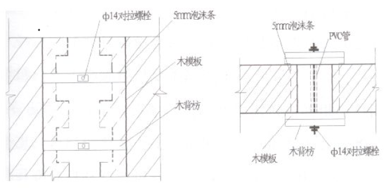 构造柱支模平面图 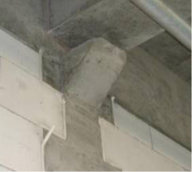 构造柱上喇叭口示意图
构造柱尺寸允许偏差表 2.3施工方法及注意事项2、砌筑时尽量采用主规格砌块，从转角或定位处开始砌筑，内外墙同时砌筑，纵横墙交错搭接。 3、砌体施工时，必须在墙体两侧双面挂线，挂线一定要拉紧绷直，洞口两侧的砌块必须规则整齐，门洞边要吊垂线进行砌筑。 4、墙底部灰缝厚度超过20mm时，用C20细石混凝土找平后在砌筑。水平灰缝的砂浆应饱满，水平灰缝的砂浆饱满度不得低于80%，蒸压灰砂砖或粘土砖砌体水平灰缝宽度为8～12mm，竖向灰缝可采用挤浆或灌缝，使其砂浆饱满，宽度为10mm。加气混凝土砌块水平灰缝15mm，竖直灰缝15mm。砌体灰缝应横平竖直，并填满砂浆，砌筑时应上下错缝，搭接长度不宜小于砌块长度的1/3。灰缝随砌随勒缝将砂浆压实。竖向灰缝不得出现透明缝、瞎缝或假缝。 5、为防止由于加气混凝土砌块及砂浆灰缝变形下沉产生裂缝，用于砌筑的加气块龄期应超过28d，墙体分多次砌筑，每日砌筑高度不宜超过2米。顶部斜砌应在下部墙体砌筑后至少等待14天，待稳定后进行斜砌。填充墙顶部斜砌采用立砖斜砌挤紧，倾斜度宜为45°～60°左右，斜砌砖逐块敲紧砌实，砂浆填满，封堵严实。 6、加气混凝土砌块砌筑时，如墙体底部凹凸不平，可适当以水泥砂浆找平。 7、构造柱与墙体的连接处应砌成马牙槎，马牙槎应先退后进，留槎宽度60毫米，并加设拉结钢筋，采用2根φ6（300厚墙3根）钢筋竖向间距为500～600mm（但根据现场实际用砖模数进行适当调整），均通长设置，预留的拉结钢筋位置正确，施工中不得任意弯折。加气混凝土砌块砖一退一进，进砖下部锯45°，宽度60mm。 8、砌筑外墙时，尽量不留脚手眼，以防留下墙体渗、漏隐患。同时在砌筑外墙时特别注意上下窗洞的边线在一条直线上，避免窗洞大小不一致，影响外立面建筑效果。 9、加气砼块与砖不可混砌。 2.4植筋植筋详见植筋方案。 2.5砌筑砂浆本工程砌筑砂浆±0.000以下与土直接接触的墙体采用M10水泥砂浆；其它墙体砂浆采用M5混合砂浆（容重不大于6.5KN/m³）；卫生间采用M5水泥砂浆。 采用预拌干混砂浆，即拌即用，拌和完毕后常温下3.5小时、夏季2.5小时、冬季4.5小时内必须使用完毕。如出现少量泌水需人工再次拌和。超过规定时间的砂浆拌合物严禁二次加水搅拌使用。 如将砂浆倒置在地面，需提前泼水均匀扫开湿润，减少砂浆水分被吸收。 砂浆铺摊长度不宜超过750mm，施工气温超过30℃时，不宜超过500mm。随砌随勾缝。施工时将作业面底部洒水湿润，随时清理落地灰。 2.6加气混凝土砌块组砌加气混凝土砌块砌体的组砌方式原则：砌体的顶部45°～60°左右斜砌砖高度按110～180mm控制，然后按加气混凝土砌块的模数间距315/215毫米（砌块高300/200毫米+灰缝厚度15毫米）排版。标准层加气混凝土砌块竖向排版见第八节。 加气混凝土砌块的填充墙砌体的水平和垂直灰缝的砂浆饱满度应≥80%，并且灰缝随砌随用φ25的PVC管压光、压实。砌块要用手锯或切割机切锯，不得用瓦刀，斧子任意砍凿。填充墙砌体留置的拉结筋的位置应与块体皮数相符合。埋置长度应符合设计要求，竖向偏差不应超过一皮高度。砌体灰缝应横平竖直，全部灰缝均应填铺砂浆；竖向灰缝必须用临时夹板灌浆；严禁用水冲洗浇灌灰缝，砌体水平缝埋设的钢筋必须放置在砂浆层中。加气混凝土砌块装卸、运输过程中，严禁抛掷和倾倒，运到现场应按品种、规格分类堆放整齐，加气块堆置高度不宜超过2米，加气块应防止雨淋. 砌筑砌体前，若存在与下图情况不符的部分墙体需先进行计算并立皮数杆后方可进行植筋和砌筑施工。 三、质量标准及保证措施3.1砌体质量允许偏差
3.2质量保证措施1、砌体的检验按砌筑的质量控制的有关内容进行检验，使用的砌块须为28天龄期以上。 2、对墙体表面的平整和垂直度，灰缝的均匀程度及砂浆饱满程度等，应随时检查并校正所发现的偏差。在砌完每一道墙后，应校核墙体的轴线、尺寸、标高及门窗洞口尺寸是否正确，确保偏差在允许范围之内。 3、墙体拉接筋、构造柱、圈梁、过梁压顶钢筋需办好隐蔽手续。无验收手续不能进入下道工序。 4、砌块、水泥要求有合格证或检验报告。砂采用中粗砂，石子规格10mm-20mm，无风化石，砂石必须干净。 5、构造柱、圈梁、过梁和压顶的混凝土按有关规定进行取样并检验。 6、严格控制砌体砂浆、构造柱、过梁等混凝土配合比，必须由施工员监督过磅。 7、大面积施工前先进行样板施工，经验收合格后按相同标准进行后续施工。 8、根据公司要求进行实测实量，且数据标识于明显处。 3.3注意事项1、砌体工程开始施工以后，应在每个施工层材料入口处板下加临时支撑，防止该板由于荷载过大而引起板面开裂。 2、阳台部位严禁堆放砌块材料。 3、水泥砂浆搅拌场地面必须采用混凝土或小砖硬化，防止砂浆中掺入泥土。 4、砂浆应随搅拌随用，防止搅拌过多造成材料浪费。 5、砌块场堆码高度不应超过2m。 6、由于本工程砌体工程量较大，施工周期长，因此施工期间应密切关注天气情况并及时做好防雨措施，防止加气混凝土砌块受雨淋湿后干缩开裂。 7、加气砌块不应与砖或其他材料的混凝土砌块混砌，不同等级的加气砌块亦不应混砌。 8、砌块内外墙墙体应同时咬槎砌筑，临时间断时可留成斜槎，不得留“马牙槎”，斜槎水平投影不应小于砌体高低，接槎时应先将接槎处清理干净，浇水湿润。 9、墙身临时设置的施工洞口，洞口净宽不大于1m，其侧边离交接处墙面不小于600mm，顶部应设置钢筋混凝土过梁，洞口两侧砌体应做成凸槎，并应加设拉结钢筋，拉结钢筋不应少于2根直径6的圆钢，竖向间距不应大于二皮砌体高度，埋入长度从留槎处算起，每边均1000mm，末端做180°弯钩。 四、成品保护1、在楼面上从砖车上卸砌块时，一定要人工搬卸，严禁翻车，保护好砌块棱角，应尽量避免冲击、撞击楼面。 2、砌筑好的砌块，不得再撬动、碰撞、松动，否则要重新砌筑。 3、注意在机械运输过程中，严禁野蛮作业，碰撞砌块墙体。 4、在多工种多层次组织交叉流水作业的施工现场，各专业工序相互协调，排出工序流程表，各专业按此流程施工，严禁违反程序施工。 5、严格工序交接制度，下道工序作业人员对防止成品的污染、损坏或丢失负直接责任，成品保护人对成品保护负监督、检查责任。 6、水电管线的暗敷下部蒸压灰砂砖或粘土砖应与安装人员配合暗敷、并在于加气混凝土砌块连接处甩头外露，必须待砌筑的加气混凝土砌块墙体强度达到要求后，再剔凿墙体。剔凿时必须弹线后使用切割机切割，禁止用砧子剔凿。 五、安全文明施工5.1安全施工1、装砖时应先取高处后取低处，严禁砌块和砖堆置过高。 2、采用施工电梯转运材料时必须将砖车放平稳，电梯起动前必须将楼层里的安全门关好，严禁私自将安全门卸掉。施工电梯转运材料时，不得随意敲击钢管提示电梯停层位置。 3、严禁在楼层上向下抛掷材料，扔东西。 4、严禁不经安全员和工长同意，私自拆除安全设施（安全牌，外架，护栏，安全网等）。 5、墙体砌筑超过地坪1.2m以上时，必须采用脚手架或铁凳，脚手板上堆码砖高度不得超过两皮砖，同一脚手板上操作人员不得超过两个。 6、不准用不稳定的工具或物体在脚手板面垫高操作。 7、搭设施工架子要牢固可靠，施工人员上下施工架要小心，在架上警惕移动。 8、不准乱扔手上的碎块、灰桶等。 9、在施工过程中应尽量避免交叉作业，如有交叉作业时，必须进行工作部位调整，远离安全隐患区域；尤其是在进行楼层满堂架和模板拆除时，必须避免临边和下面的砂浆搅拌棚、材料堆场之间的交叉作业。提升爬架时，外墙禁止砌筑。 10、在周边砌体施工过程中，必须设置安全隔离带，禁止地上人员跨越安全隔离带。 11、临边砌体施工时，必须采取有效防护措施，如搭设防护架或系安全带。 12、楼层砌块堆放时应分开堆放，重叠堆放高度不得多于4层。 5.2文明施工1、严格遵守平顶山市环卫、市容、场容管理的有关规定和《现场文明施工管理细则》，加强现场排污及运输车辆的管理。防止污水污染环境。 2、现场按总平面布置图确定的位置堆放各种材料、设置临时设施等，不得随意摆放或堆设。材料堆码要整齐，标识明确。 3、当天拌合砂浆当天用完，砌体砌筑完毕后及时将落地灰清除。 4、每天对砂浆搅拌棚进行整理，确保搅拌棚干净。 六、应急救援 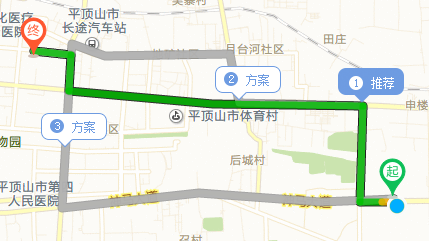 平顶山市第一人民医院救助路线图 七、组砌方式
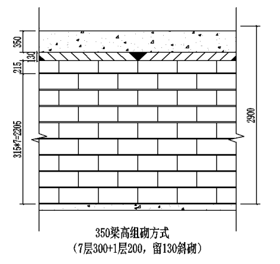 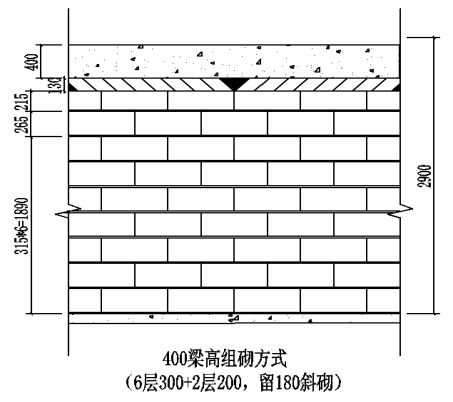
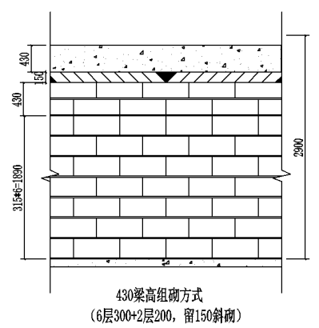 八、疫情防控措施1、服从项目部关于疫情防控的封闭式管理和其它管理； 2、配合项目部卡点测体温、登记等工作； 3、必须佩戴口罩。施工现场所有人员都要做好个人防护措施，必须佩戴口罩。 4、宿舍保持通风换气，尽可能打开门窗通风换气； 5、必须做到垃圾无害化处理，口罩丢弃在专用收集箱； 6、服从项目部安排的分餐、错时用餐安排，自觉在人少时候就餐； 7、避免人群聚集，人与距离保持1m以上； 8、注意个人卫生，加强个人防护，避免感冒、发烧。 | ||||||||||||||||||||||||||||||||||||||||||||||||||||||||||||||||||||||||||||||||||||||||||||||||||||||||||||||||||||||||||||||||||||||||||||||||||||||||||||||||||||||||||||||||||||||||||||||||||||||||||||||||||||||||||||||||||||||||||||||||||||||||||||||||||||||||||||||||||||||||||||||||||||||||||||||||||||||||||||||||||||||||||||||||||||||||||||||||||||||||||||||||||||||||||||||||||||||||||||||||||||||||||||||||||||||||||||||||||||||
交底人 |
| 交底日期 |
| |||||||||||||||||||||||||||||||||||||||||||||||||||||||||||||||||||||||||||||||||||||||||||||||||||||||||||||||||||||||||||||||||||||||||||||||||||||||||||||||||||||||||||||||||||||||||||||||||||||||||||||||||||||||||||||||||||||||||||||||||||||||||||||||||||||||||||||||||||||||||||||||||||||||||||||||||||||||||||||||||||||||||||||||||||||||||||||||||||||||||||||||||||||||||||||||||||||||||||||||||||||||||||||||||||||||||||||||||||
被交底人 |
| |||||||||||||||||||||||||||||||||||||||||||||||||||||||||||||||||||||||||||||||||||||||||||||||||||||||||||||||||||||||||||||||||||||||||||||||||||||||||||||||||||||||||||||||||||||||||||||||||||||||||||||||||||||||||||||||||||||||||||||||||||||||||||||||||||||||||||||||||||||||||||||||||||||||||||||||||||||||||||||||||||||||||||||||||||||||||||||||||||||||||||||||||||||||||||||||||||||||||||||||||||||||||||||||||||||||||||||||||||||